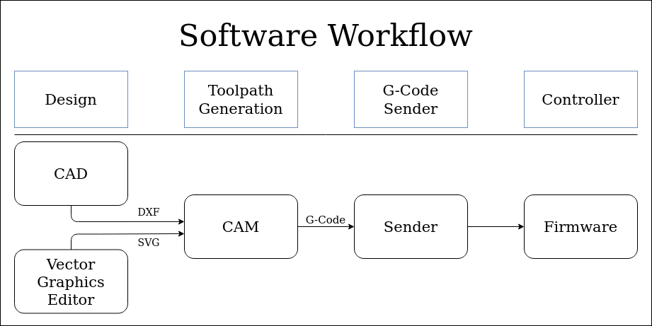
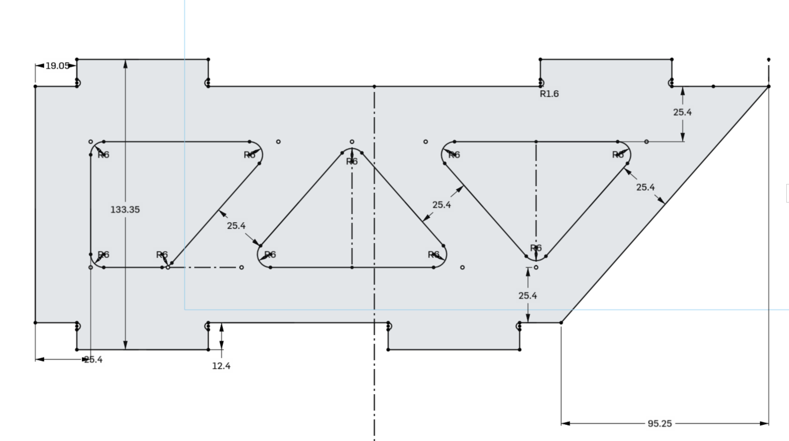
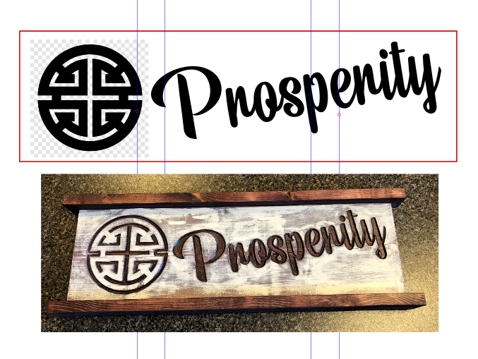

Software Workflow¶
Starting out in the CNC world can be very intimidating, even if you already know about 3D printing (which is a CNC machine, technically). However, when broken down into manageable pieces it’s easy to digest.
Here, we will describe the different steps in the CNC milling workflow process along with their associated software components/tools. The goal is to provide you a better understanding of some of the steps and terminology, which in turn gives you the background to better seek help and explore possibilities.
Overview¶
This is the 1000ft (304m) overview (we will explore each in more detail within the sections that follow).
There are 4 components to the workflow and associated software as follows:
| Step | Software | |
|---|---|---|
| 1 | Design | CAD (Computer Assisted Design) or Vector Graphics Editor |
| 2 | Toolpath Generation | CAM (Computer Assisted Machining) |
| 3 | G-Code Sending | Sender |
| 4 | Milling | Controller |

- Design
- The first step is to make or get a design. If you are making one, then you will probably use a CAD program (for functional parts, like a gear) or a Vector Graphics Editor (for art, like a sign). The output of this step is typically either a 2D file (like a .DXF or .SVG) or sometimes (but not often) a 3D file (like a .STL).
- Toolpath Generation
- This is the step where you take your design, and describe which lines to engrave, which areas to cut out, and which parts to leave. It defines what “paths” your “tool” is going to take. CAM also is where you will define what kinds of milling bits you have, and how fast and deep you want to move them through the material. The output of this step is g-code (in a .gcode or .nc file). G-code is the “language” of the instructions for your CNC.
- G-code Sender
- The g-code is just a list of instructions that define where the tool should go. The software used to “play” these instructions is the g-code sender and communicates with the controller. There are a number of options for this software. Most people have a personal preference along with it being well matched with your controller.
- Controller
- The controller is responsible for taking g-code instructions and managing the precise movements of the motors. There are other jobs, but they are all related to this one function. There is firmware (software on a chip) that facilitates this. In the CNC world there are many “flavors” of this firmware. In our CNC machines, the most common flavors are Marlin and Grbl.
Design¶
There are many options for CAD and Vector Graphics Editors. Either can take thousands of hours to master. So we can’t go into too much detail here. Luckily, you don’t have to be a master to get your hands dirty.
There are two common methods of creating designs for a CNC machine:
Note
Sometimes, you can find a design that is already a .DXF or a .SVG. If so, great! You can easily skip the Design step. In fact, for signs, there are many SVG’s on Etsy that are inexpensive to purchase.
Functional Parts Design¶

If you are making functional parts, then you want a CAD tool. The output you want is usually .DXF. Imagine you want to make a toolbox, you would draw out each side of the toolbox and export a .DXF for each face of the box. You care a lot about the size of each side, because it all has to fit together when you are done. These programs can all create DXF files and they all have a lot of information on their use (This is not an exhaustive list, but if you want to add something else, feel free to edit this document.
- Autodesk Fusion 360
- Onshape.com
- SketchUp
- OpenSCAD
- LibreCAD
- TinkerCAD
Art Design¶

If you want to carve out art, signs, lettering, or logos then you’ll want to use .SVG files. These parts have important dimensions and measurements, but they are usually drawn in programs specializing in art. The most common programs are Inkscape and Adobe Illustrator. In these programs, you can very precisely adjust the shape to get an aesthetically pleasing design, or import another design and adjust it.
Note
If you have a piece of art in a .jpg, .png, or .bmp format, you can’t directly use that. To make it usable, you can use Inkscape. Try searching for inkscape trace bitmap tutorial
Toolpath Generation/CAM¶

Note
If you are familiar with 3D printing, this is similar to the slicer step (but not as automated).
Now that you have a design, you basically have just a bunch of shapes or objects. You still haven’t said which shapes need to be cut out, which shapes need to be engraved or drilled, and which shapes need to be completely removed. In CAM, you will select the shapes and choose which operations you want to perform. For example, if you are cutting out letters, you will need to use CAM to cut out each letter. You will also need to tell it how far to cut. It doesn’t know anything about the material, so if you’re cutting through 10mm ply or 5mm ply, you need to tell it so it doesn’t over cut (too much).
You also haven’t told the machine how fast or deep to cut. There are many different settings related to the cutting (for example, how fast to “plunge” or dive into the material, how fast to move through the material, what kind of pattern to use when cutting out a pocket). Each material, each machine, and each bit will require a different set of parameters for how fast to move material, how many passes to take, and how deep you can go on each pass.
There is a real art to making good CAM. Knowing your machine and making lots of test cuts can make a lot of difference in total time spent, and output quality.
After CAM understands everything you want it to do, it will make a g-code file. The g-code file is a list of instructions for the Controller. It is important that the instructions are compatible with the controller you have. If you bought a controller from V1Engineering’s shop, then it is running Marlin, and the CAM software needs to be configured to output g-code files compatible with the Marlin controller.
There is a lot more detailed information in the Milling Basics, Estlcam Basics, and Estlcam 2.5D.
Warning
Fusion 360 does have CAM built in, and there is a Post processor available for it. It works great, but Fusion 360 CAM can be confusing, and it is highly recommended to start with Estlcam first. Even if you decide to later use the Fusion 360 CAM, the skills learned with Estlcam will be easier to learn, and will directly apply to any CAM software.
G-code Sender¶

The term “G-code Sender” isn’t a very technical term, because there are so many ways to “play back” a g-code file.
A g-code file is just a list of instructions, with one instruction on each line. These need to be played back, one after another, so that the controller knows what to do.
In addition to playback of g-code files, this software also does some basic setup. It needs to be able to send “jog” commands, which just move the machine around in one direction at a time. And it also needs to be able to set the “zero” location to set up the cut. In dual endstop machines, it should also be able to command the homing sequence (Most CNC machines don’t need endstops like 3D printers because the start location is on the workpiece, not the machine).
The simplest method to do this is with Repetier-Host.
The other simple method is to also install an LCD screen on the controller, which will take an SD card. You can put the file on the SD card, and set the whole thing up on the LCD, and play the file without bringing a computer into the shop.
There are many other advanced ways to send gcode. You can hook up a raspberry pi, and use the v1pi image. You can use CNC.js standalone on your computer, or use pronterface.
Controller/Firmware¶

The final step is to actually do the milling/cutting. Obviously this is done by the tool at the end of the gantry, but it is facilitated by the controller. The controller takes movement commands, and drives the motors. If you bought the controller from the V1Engineering shop, then it is running Marlin. Marlin is designed for 3D printing (and so are a lot of tools we use). Don’t be surprised if you see something labeled “print” when you think it should be “cut”.
The V1Engineering Shop sells the controllers flashed and ready to use. If you want to update them, or you need to change the software for some reason, there are preconfigured versions of Marlin for some boards. There are a lot more detailed instructions in the Marlin firmware section of the docs.’
Warning
You will see “Arduino” used a lot in discussions around the V1Engineering machines. It is the software used to flash the controller. It is not involved with running the machine.
Summary¶
That really is it. If you see someone talking about software or firmware in the forums, it is probably something that fits into one of these categories. Don’t get intimidated, and do ask questions. We were all beginners at some point (many of us, not that long ago).